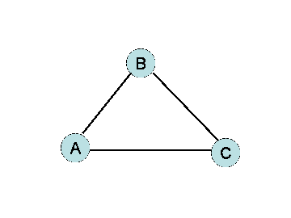
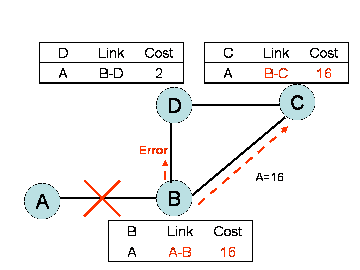

...................................................................................................................................................................................
Evaluare RIP
De la rezultatul simularii si caracteristicilor RIP bazate pe algoritmul Bellman-Ford, noi am confirmat urmatoarele:
- Limitarea dimensiunii retelei
- Numararea la infinit
- Viteza de convergenta
1. Pentru ca numarul maxim de hopuri este 15 in RIP, dimensiunea retelei este limitata pentru a fi una unica. Nu exista nici o cale de a rezolva problema folosind RIP.
2. Cat despre numararea la infinit, ciclul scenariului specific poate fi eviatat folosind o tehnica cunoscuta precum impartirea orizontului cu intoarcere invalidata (split-horizon with poisoned reverse). Ideea este simpla: in fig.2 daca C trece prin B pentru a ajunge la A, atunci C va anunta B ca distanta pana la A este infinit. C va contiuna sa anunte acest lucru lui B , atat timp cat traseul pentru a ajunge la A trece prin B. Atata timp cat B " crede" ca C nu are cale catre A, B nu va incerca traseul A catre C, atata timp cat C continua sa treaca prin B. Cu toate acestea impartirea orizontului cu intoarcere invalidata nu rezolva intotdeauna problema numararii ppana la infinit. De exemplu, numararea la infinit apare si in cazul in care D "ii spune lui " C inaintea lui C.(fig.3)
|  |
|
 |
| Fig.2 Impartirea orizontului cu intoarcere invalidata |
|
Fig.3 Numararea la infinit |
Noi putem creste convergenta cu ajutorul unui mecanism de actualizare, care permite actualizarea tabelului imediat, daca sunt semnalate schimbari de stare cum ar fi Link Down. In simularea RIP, daca se apasa un buton, noi putem actualiza starea imediat cu Step mod.
Concluzii
Aceasta a fost o aplicatie Java pentru protocolul de rutare RIP bazata pe algoritmul Bellman-Ford.
Multumim.
|
||Prev||Next||
Versiune Romana - Popescu Mioara
Universitatea Oviduis, Constanta, Facultatea de Matematica si Informatica
(c) Marcos Andres Diaz & Yasuko Iwai
Boston University, College of Engineering
|